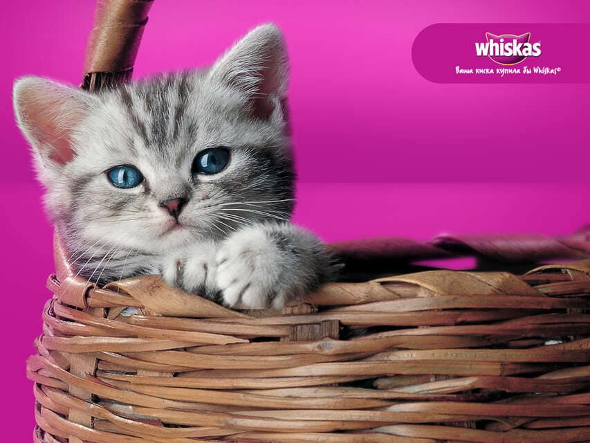

В рекламе кормов для животных на самом деле рекламируют не то, что вы думаете.
Вам показывают милого котёнка, резвящуюся собаку, взрослого, но озорного кота.

Причём, этот кот или собака вовсе не похожи на вашу, и вы их не отождествляете со своими питомцами, а в рекламе вискаса вообще снимают кошек только одной породы.
Разгадка проста: вся реклама кормов для домашних питомцев рекламирует на самом деле Жизнь С Домашним Питомцем. То есть формирует у общества запрос на приобретение потребителя корма. Сама культура домашних кормов уже в рекламе не нуждается. Она привита в короткий срок, но достаточно плотно.
Договориться рекламировать в первую очередь Жизнь, а не Продукт производителям домашних кормов не очень сложно. Ведь производитель по факту один — компания Mars.